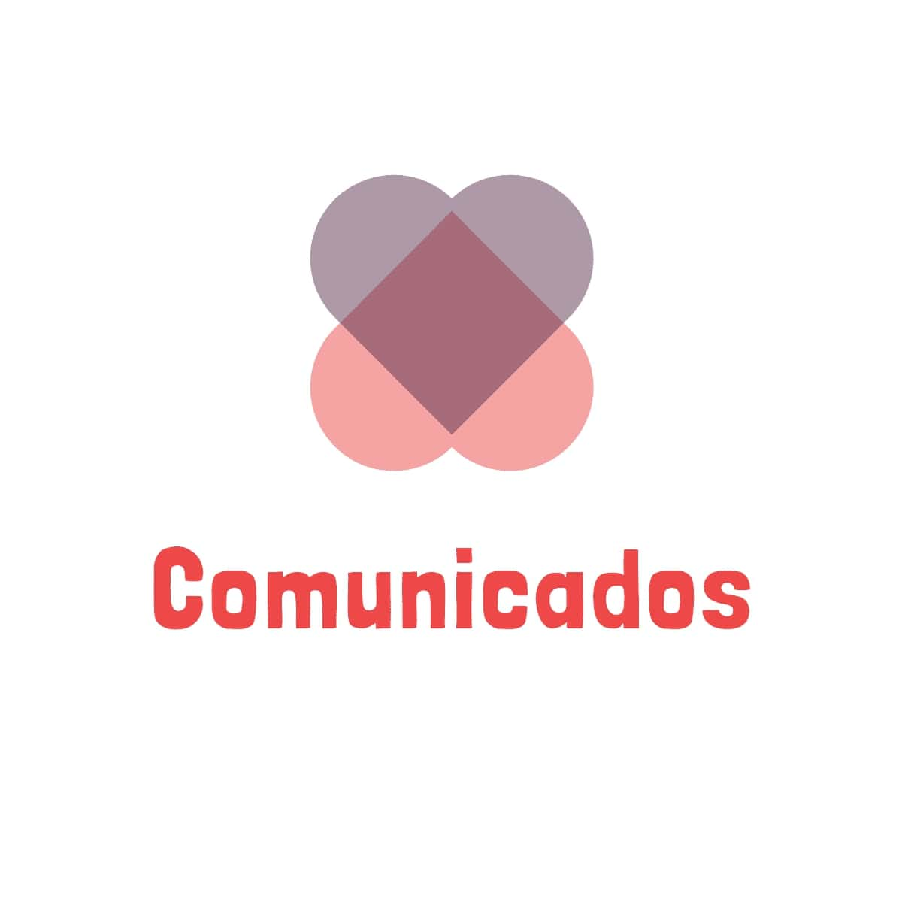

Bem-Vindo(a)!
Modo Clássico
Faça a maior pontuação sem se preocupar com tempo
JOGAR
Modo Contra o Tempo
Você consegue responder rápido?
JOGAR
HIGHSCORES
| NOME | PONTOS | CLASSIFICAÇÃO |
|---|
Modo Clássico
1. Não existe período de tempo para responder a questão.
2. Só há uma alternativa correta.
3. Cada acerto gera uma pontuação de 10.
4. Ao final salve seu resultado.
Modo Contra o Tempo
1. Responda corretamente dentro do tempo de 20seg.
2. Só há uma alternativa correta.
3. Ao marcar uma alternativa incorreta, o jogo é encerrado.
4. Se o crônometro atingir 20seg, o jogo é encerrado.
Sobre
Comunicados é um jogo quiz desenvolvido dentro da disciplina Comunicação em Saúde , com intuito de proporcionar o conhecimento para os discentes engajados na área da saúde. Sabe-se que a comunicação em saúde é uma peça fundamental para criar uma relação entre profissionais e pacientes, especialmente em questões relacionadas com a aprendizagem, com os processos de trabalho em promoção da saúde, e prevenção da doença realizada na atenção primária à saúde.